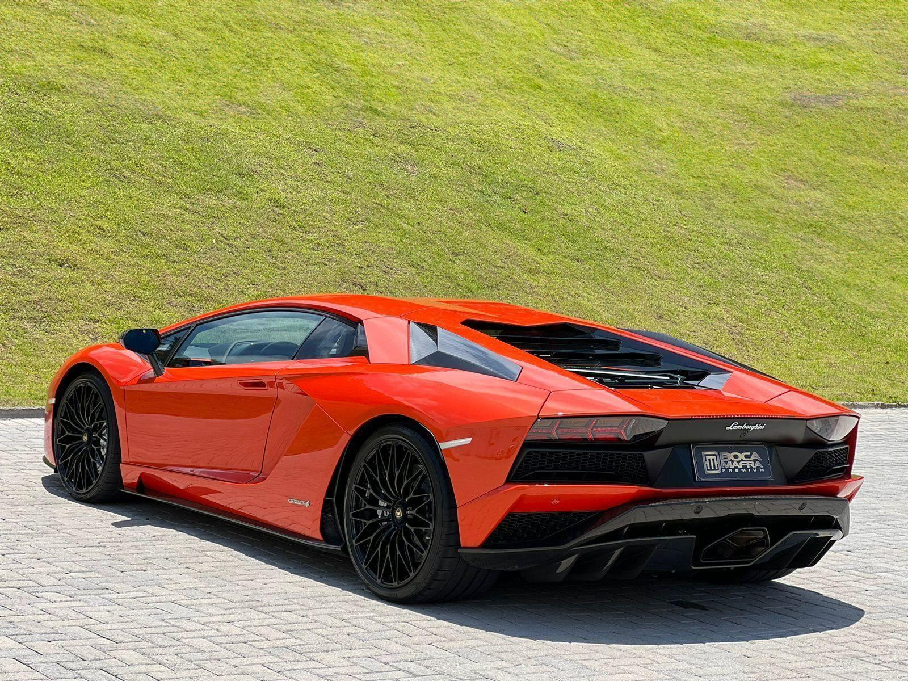
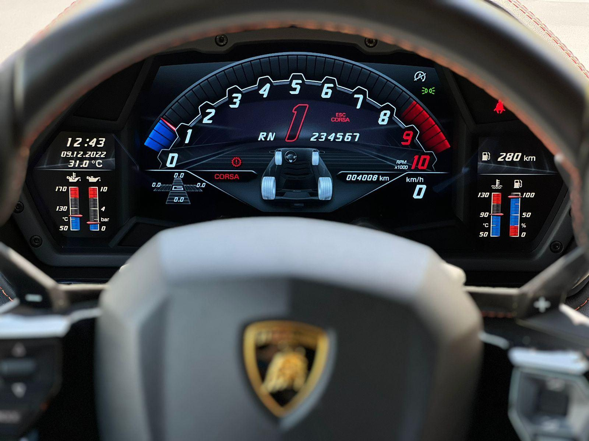
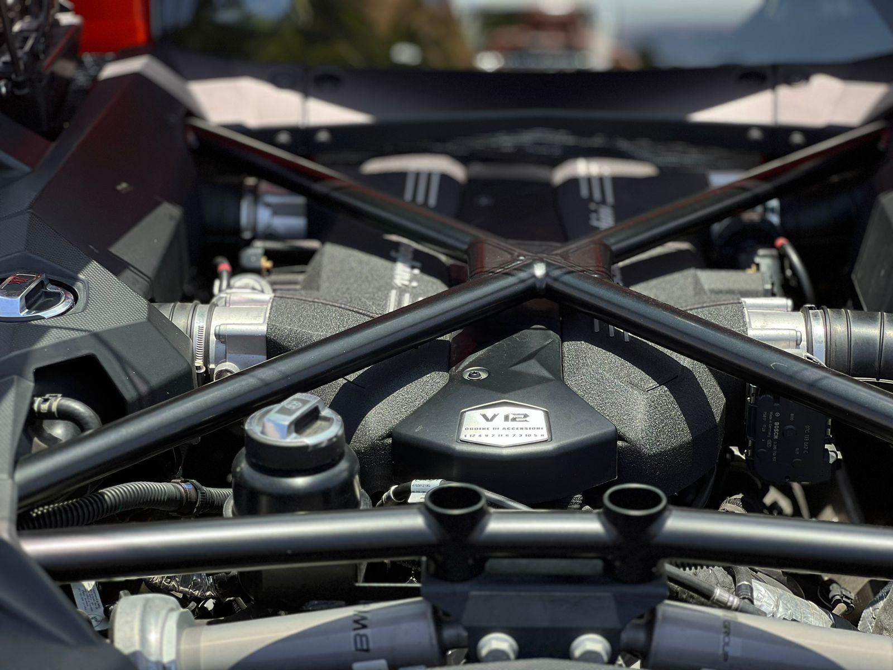
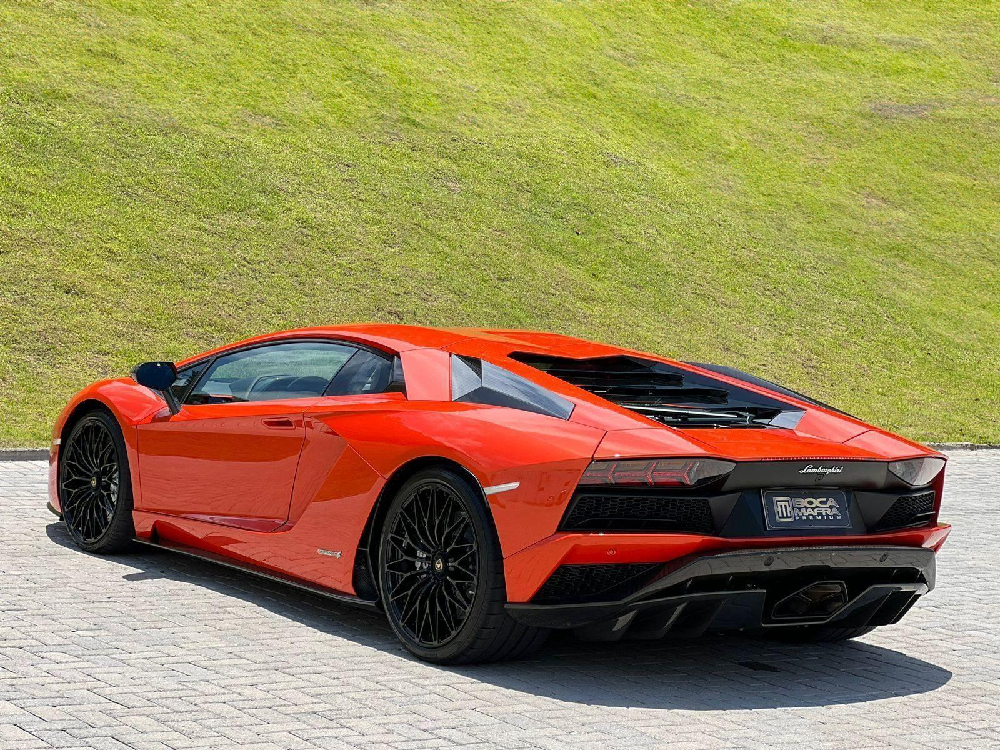
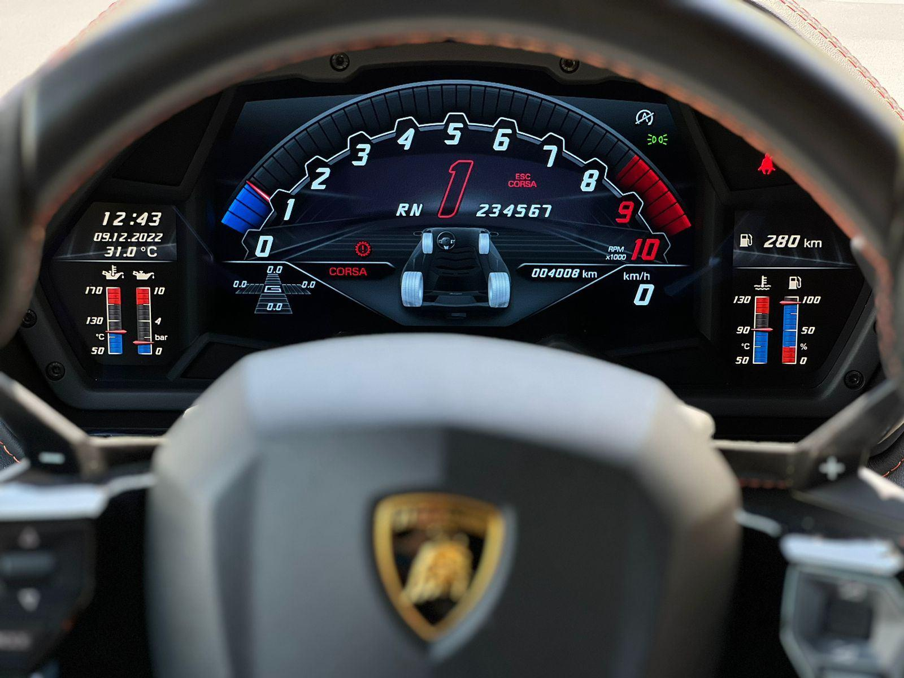
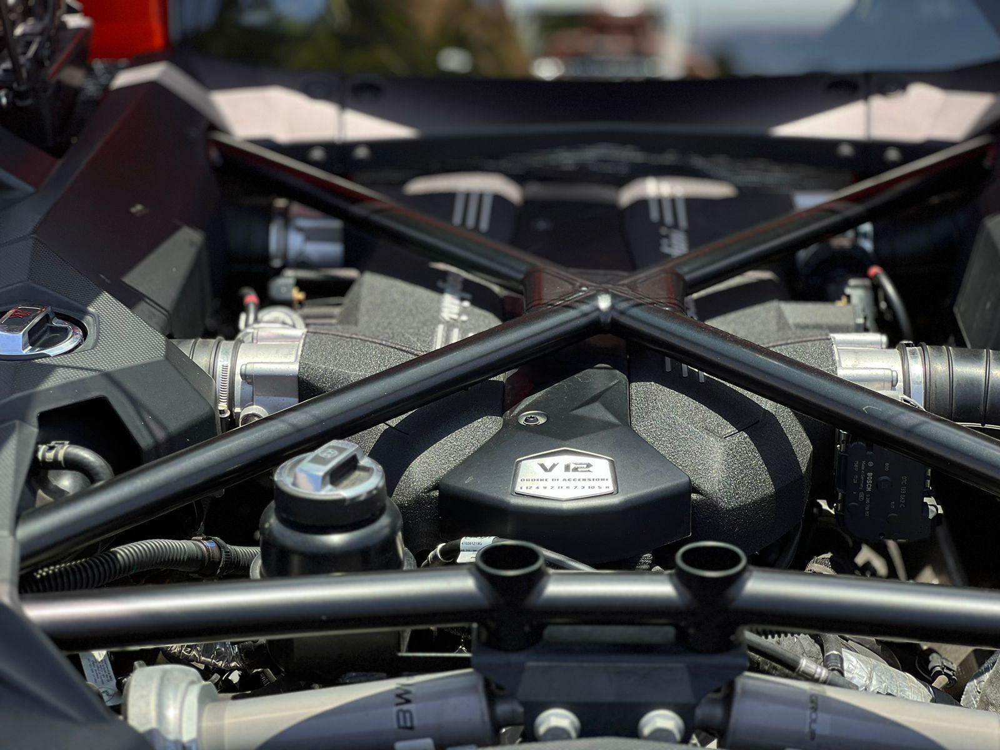

Lamborghini Aventador SVJ
 





Ficha técnica completa
- Motor: 6.5 L V12
- Potência: 770 cv
- 0–100 km/h: ~2.8 s
- Tração: AWD
Dados principais
6.5 V12 | 770 cv | R$ 5.000.000
Descrição
O Aventador SVJ é uma expressão extrema de performance naturalmente aspirada: aerodinâmica altamente otimizada e som do V12 para quem busca experiência de pista.